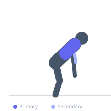

Exercise guide / Close-Grip Neutral T-Bar Row
Close-Grip Neutral T-Bar Row
The close-grip neutral T-bar row uses a parallel/neutral grip with hands close together, allowing the elbows to track tightly alongside the torso for maximum lat engagement. The neutral wrist position is comfortable for most trainees and reduces forearm fatigue, allowing greater lat-focused loading than pronated or supinated alternatives.
Primary muscles
latissimus dorsi
Secondary muscles
rhomboid major
biceps brachii
trapezius middle
Stabilizers
erector spinae
Equipment
T-Bar Row


Starting position
- Straddle the T-bar machine. Grip the V-handle or close neutral-grip attachment. Hinge to 45-60 degrees, arms extended.
Setup
- Set chest pad to allow full arm extension at the bottom. Keep feet straddling the bar, slightly wider than hip width.
Steps
- Step 1: Begin hinged with arms fully extended holding the V-handle.
- Step 2: Drive elbows back alongside the torso.
- Step 3: Row until elbows are past the torso level.
- Step 4: Hold 1 second at the top.
- Step 5: Lower under control to full extension.
Coaching cues
- Elbows hugging the ribs on the way up
- Lead with the elbows, not the hands
- Feel the lats at the bottom stretch
Breathing
- Exhale on the row. Inhale descending.
Range of motion
- Full arm extension to elbows past torso level.
Tempo
- 2-1-2-0
Common mistakes
- Elbows flaring wide — keep them tucked for lat emphasis
- Excessive torso bounce — control the torso angle throughout
Safety
- Maintain neutral lumbar spine — do not hyperextend at the top
- Use straps if grip limits lat training volume
Training
- hypertrophy: 8–15 reps
- strength: 5–8 reps
- hypertrophy: 3–4 sets
- Rest: {'hypertrophy': 90, 'strength': 120}